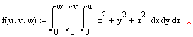
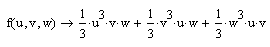

Symbolic Optimization |
Mathcad's symbolic and numeric processors are best linked together through specific symbolic evaluations assigned to a numeric variable or function name. This process can reduce calculation time and increase the accuracy of results when there is a closed-form solution for an expression.
Any old worksheet that has worksheet optimization turned on opens with optimization turned off. You see a dialog warning you this is happening. You can only optimize individual regions. You can change individual region optimizations to live symbolic evaluations assigned to a numeric name, so you can see the expression being defined or calculated in your worksheet. We recommend that you choose the regions you expect to yield compact closed-form expressions and evaluate them symbolically instead.
When optimization is turned on, the symbolic processor attempts to simplify any expression to the right of an equal sign for definition (:=) or to the left of an equal sign for evaluation (=).
If Mathcad finds a simpler form for the expression:
If Mathcad is unable to find a simpler form for the expression, a blue asterisk is placed next to it. For example, consider the integral:

The optimized result is identical to the result using live symbolics:

The multiplications are much less memory-intensive to perform than integration, and they are not subjected to the limitations of approximate numerical methods.
To disable optimization for an expression, right-click it and uncheck Optimize on the menu.
| Viewing the Optimized Expression |
To see the reduced, evaluated expression, double-click the asterisk or select Optimize > Show Optimization on the Tools menu. Show Optimization is enabled only if an optimized form of the equation exists.